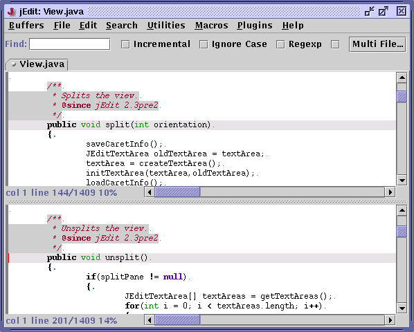

jEdit starts up with only one editor window, or view. However, it is possible to have any number of views open at once, with each buffer being edited in one or more views. Views can also be split into multiple panes, for side-by-side viewing of two or more locations in a single buffer. Note that a view can still only edit one buffer at a time, even when split. Another limitation is any splits are removed when switching buffers or reloading.
Utilities>New View (keyboard equivalent: Control-E Control-N) will create a new view. It will display the same buffer as the current view. A different buffer can also be selected from the Buffers menu or using the buffer tabs. Utilities>Close View (keyboard equivalent: Control-E Control-N) will close the current view. jEdit will exit if the last view is closed.
Utilities>Split Horizonally (keyboard equivalent: Control-E 2) will horizontally split the text area. Utilities>Split Vertically (keyboard equivalent: Control-E 3) will vertically split the text area. Utilities>Unsplit (keyboard equivalent: Control-E 1) will remove all splits from the current view.
Figure 4-3. A view split into two panes
